全部主題
近日外媒報導，根據Anthropic的IPO文件顯示，其與博通（Broadcom）的合作案中，博通同意提供最高420億美元的可轉換票據融資，協助Anthropic支付AI基礎設施支出，A...
IT之家 10 月 4 日消息，据台媒经济日报，英伟达与鸿海首次对外展示了利用机器人制造设备的成果。 针对英伟达 GB300 的母线（Busbar，也叫汇流排或母排，是一种用于大电流配电和传输的导电金属条、棒或管）以及多组连接器组装等较复杂、依赖人工的工序，已经可以导入机器人自动化，提升组装稳定性与效率。 IT之家从报道获悉，在核心工艺指标方面： 装配成功率： Busbar 组装成功率已超过 95% ；多连接器插接成功率约 90% 至 95%。 作业耗时：Busbar 组装时间目标在 124 秒以内；4 组连接器的插接时间目标在 72 秒以内。 整体生产
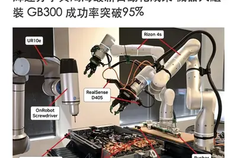
IT之家 10 月 5 日消息，据《华尔街日报》报道，一款仅问世三周的人工智能模型 Jev 已经在硅谷圈子引发热议，人们开始探讨大语言模型之外的替代路线，同时这款模型也已经催生出不少跟风仿制产品。 初创企业 TypeSafe AI 于当地时间 9 月 15 日发布了 Jev。该模型的运行方式不同于聊天机器人，它并不生成文本。相反，它借助机器学习，把输入内容归类到一组预先设定好的输出结果当中：回答“是”或者“否”、输出一个数值评分，或是从既定列表里给出答案。该公司将这套技术思路称作“面向校准决策的强化学习”。 这家初创公司的负责人是迪奥戈 · 阿尔梅达（D
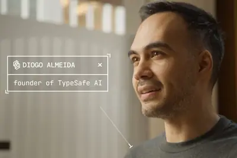
IT之家 10 月 5 日消息，Meta 于当地时间 10 月 2 日宣布推出开源项目 Muse Gadgets，允许开发者为旗下个人 AI 智能体 Muse 打造自定义硬件。 Meta 同时也已经在 GitHub 上按照 Apache 2.0 许可发布了 ESP32 固件和 Linux 设备 SDK。开发者可以将低成本 ESP32 开发板或树莓派等 Linux 设备连接到 Muse，接入显示屏、按钮、传感器、执行器以及工作台上其他可联网的设备。 在硬件适配方面，Meta ESP32 SDK 文档目前已支持 11 款 ESP32 开发板，包括 Espre
AI資料中心對低功耗記憶體LPDDR5X DRAM的需求在2026年已持續擴大，從晶片業界人士的觀察來看，這個掃貨強度，到2027年應會持續，勢必使得其他也會用到LPDDR5...
有別於供應鏈傳出歐系車廠將軟體定義汽車（SDV）與智慧化方案借重中國軟體及系統開發，美系車廠的智慧化布局則深度綁定矽谷高科技業者。DIGITIMES Research近期針...
澳洲資料中心營運業者Firmus正準備在當地IPO。Firmus不但是NVIDIA重要合作夥伴，近期也陸續與OpenAI、Meta達成合作。
NVIDIA執行長黃仁勳曾表示，Marvell的光學技術將使其成為下一個兆級市值美元公司，而Marvell甫於9月下旬宣布擴大與格羅方德（GlobalFoundries；GF）的合作關係，朝...
Google新一代旗艦人工智慧（AI）模型Gemini 4 Argon甫亮相，卻傳出該模型在多項基準測試中表現亮眼，但內部仍有員工認為編碼能力不夠穩定。
Google藉由SpaceX的獵鷹9號（Falcon 9）火箭，將首批TPU送上低地軌道（LEO）進行運作測試，但業界真正關注的不只是AI晶片能否在太空環境中運作，更是科技業試圖...
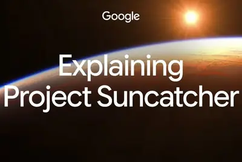
泰國正在擬定人工智慧（AI）資料中心管理框架，其中一項提案，就是將用電需求達100 MW以上的資料中心歸類為「超大規模」。
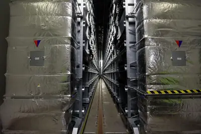
“IT早报”时间，大家好，现在是 2026 年 10 月 5 日星期一，今天的重要科技资讯有： 1. 乐山大佛景区回应网传“掏耳朵”养护作业视频：系 AI 合成，佛耳内并无所谓“杂物” 网传视频显示文保工人给大佛掏耳朵、掏鼻孔，还出现猴子抢安全帽等离谱画面。乐山大佛管委会回应称该视频系他人 AI 生成，并非真实场景。2026 年以来大佛已开展 5 次保养维护，耳鼻内并无杂物，凌云山片区也没有猴子。>> 查看详情 2. 央视曝光外卖“明厨亮灶”造假，湖北、云南等地核查处置 针对外卖商户摄像头随意摆放、故意偏移角度规避监督等问题，市场监管总局迅速部署湖南、湖
IT之家 10 月 5 日消息，美国上周逮捕了一名嫌疑人，此人被控走私含有受出口管制的英伟达芯片的高端计算机服务器进入中国。 美国司法部于当地时间上周四发布新闻稿，指控 38 岁的格雷格 · 刘（Greg Lui）使用虚假文件掩盖一批货值超过 3 亿美元 （IT之家注：现汇率约合 20.16 亿元人民币） 的服务器货物；据称他明知这批货物最终将运往中国。 美国联邦调查局的起诉书中称，格雷格 · 刘是大地智造计算机公司（Earthmade Computer）的首席执行官，他涉嫌与马来西亚、新加坡等南亚国家的货运代理企业合谋，将服务器芯片非法转运进入中国，其
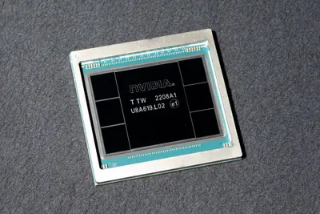
科技財經電子報 Culpium 引述消息人士指出，台積電正在評估是否協助馬斯克旗下的德州晶圓廠計劃 Terafab 進行營運，馬斯克在 X 上回覆確認了雙方正在洽談。Terafab 是 SpaceX 與 Tesla 的聯合計劃，預計成為全球最大建築，第一期造價約 168 億美元，僅供應 Tesla、SpaceX 與 xAI。
AI 推論成本下跌速度超越摩爾定律（Moore’s Law）所描述的晶片發展趨勢。AI 研究機構 Epoch […]
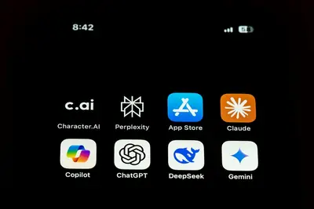
IT之家 10 月 5 日消息，随着内存成本持续上涨，微软正将“降低 Windows 11 内存占用”列为 2026 年剩余时间的重要工作之一。 微软 Windows 与设备业务负责人帕万 · 达武卢里（Pavan Davuluri）在官方播客《Inside Windows》中表示，内存涨价已经成为整个 PC 行业都在关注的问题，Windows 团队正在从系统底层到应用框架多个层面提升内存利用率。 这一话题源于一名 Surface Pro 用户在《Inside Windows》中的提问。他表示，为了在设备上运行本地 AI 模型，不得不关闭部分端侧 AI
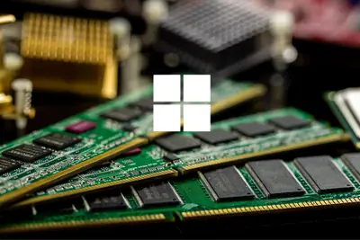
AI slop seems to be overwhelming bug bounty programs.
On Equity, we discussed the Trump administration's attempts to rebrand AI.
New Jersey's lieutenant governor Dale Caldwell was forced to resign on September 25th after an investigation found he had sexually harassed a staffer and repeatedly violated ethics rules. The now-former Lt. governor has been making the media rounds trying to clear his name. But h
StarSkirmish pits AI-made StarCraft-playing bots against one another, as well as against human-made bots. OpenAI's GPT-6 Astra and Claude Opus 5.5 were essentially tied as the best-performing AI-made bots, but they couldn't top Stardust, the top-rated human-made bot. On Friday, G
IT之家 10 月 4 日消息，近期网络上流传一段所谓“乐山大佛开展养护作业”短视频，其中显示文保工人正在给大佛“掏耳朵”，佛耳里掏出鸽子和腐叶，鼻孔里清理出大量腐叶等物质，旁边还有一只猴子在佛身上上蹿下跳，猴子还抢工人的安全帽戴在自己头上。 对此，乐山大佛文物保护（景区）管委会回应媒体“四川观察”，称相应视频不实，系他人 AI 生成，不是乐山大佛景区里的真实场景。希望广大网友不信谣、不传谣。 乐山大佛文物保护（景区）管委会数字化信息中心副主任陈芮透露，“2026 年以来乐山大佛总计开展 5 次保养维护，其中第 5 次是 9 月 20 日至 25 日，主
IT之家 10 月 4 日消息，DeepSeek Harness 组成员崔添翼今日回应了“如何看待 DeepSeek Harness 在新版本中加入 Claude Code Mods 兼容？”，他本人是这次 v0.2.1-alpha.1 版本中加入 Claude Code Mods 兼容层的作者。 目前 DeepSeek Harness 中的“Claude Code Mods 兼容层”属于“alpha 版本”中的“实验性功能”。做这个兼容层的主要目的，是验证 Claude Code Mods 向插件作者提供的扩展能力，是否大致是 DSH“一切皆插件”架构
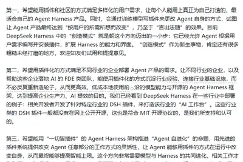
Under the One Big Beautiful Bill Act, data center projects in rural areas could be eligible for major tax benefits starting next year. Some hyperscalers do not seem eager to take the free cash.
IT之家 10 月 4 日消息，近日，国务院学位委员会正式下发《关于下达 2025 年度学位授予资格自主审核单位撤销和增设学位授予点名单的通知》（学位〔2026〕17 号），天津大学成功获批 全国首个、也是目前全国唯一一个的“脑机接口”一级交叉学科博士学位授予点 。 这在脑机接口未来产业发展历程中具有重要里程碑意义，标志着我国脑机接口学科建设与人才培养迈入全新阶段。 据介绍，脑机接口作为人机交互的最高形态，是融合临床医学、神经科学、人工智能、电子信息、集成电路等多学科前沿理论的颠覆性技术， 已被正式写入国家“十五五”规划 ， 成为前瞻布局的未来产业重点方
IT之家 10 月 4 日消息，10 月 3 日，比亚迪王朝网销售事业部总经理路天透露，秦 MAX 车型 9 月热销 12066 辆，上市 2 个月销量连续破万。 IT之家注意到，比亚迪秦家族“超大杯”车型秦 MAX 于 8 月 13 日晚间正式上市，新车提供 EV、DM-i 两种车型共 9 种不同配置，售价区间为 9.99 万-14.39 万元。 该车长宽高分别为 4866/1880/1495mm，轴距为 2820mm，拥有 523L 后备箱，最高可拓展至 1450L 空间，号称同级领先；车内拥有 27 处储物空间。 秦 MAX EV 全系标配 第二代
IT之家 10 月 4 日消息，开发团队 System76 现已更新 COSMIC 项目的 Pull Request（PR）模板，新增一份强制性检查清单，明确禁止贡献者提交利用 AI 辅助完成的代码。贡献者必须确认提交内容中不存在任何 AI 生成的代码、注释以及描述，否则无法按照要求提交贡献。 公开信息显示，COSMIC 是 System76 基于 Rust 开发的 Linux 桌面环境。在 COSMIC 推出之前，System76 的 Pop!_OS 长期基于经过深度修改的 GNOME 桌面环境。不过，由于 System76 与 GNOME 上游开发者
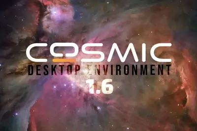
美國以人類細胞、器官晶片與電腦模型取代動物實驗的趨勢，正從實驗室走向監管制度核心。從哈佛大學魏斯研究所（Wys […]
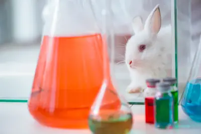
隨著各國加速開發無人僚機，法國也開始為新一代空戰模式鋪路，法國空軍與太空軍、軍備總署（DGA）及國防人工智慧機 […]
IT之家 10 月 4 日消息，博主 @数码闲聊站 今日爆料，苹果 iPhone 18 Pro 系列 W39 周累计销量 176 万台（预计指国内），根据国庆期间的走势，W40 预估累计销量超 250 万台，两款机型均轻松完成单品激活 100 万台。 IT之家注意到，W39 指的是 2026 年的 第 39 个自然周 ，也就是 9 月 21 日到 9 月 27 日这一周。手机行业习惯用“W+ 周数”来标记周次，方便对比每周的销量和市场份额变化。 苹果 iPhone 18 Pro 与 iPhone 18 Pro Max 两款机型于 9 月 18 日正式开售
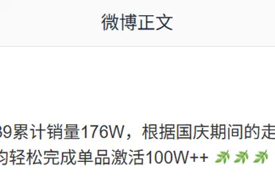
IT之家 10 月 4 日消息，据韩媒 The Elec 报道，韩国多家主要银行近日接连发生信息泄露事件。与以往直接针对网上银行等核心金融网络的攻击不同，此次事件的目标主要集中在银行员工及贷款代理机构使用的外围业务系统。韩国金融监管部门已开始对金融机构 IT 系统展开全面检查。 其中，新韩银行用于贷款代理机构查询业务的系统自 9 月 28 日起连续 3 天遭到攻击，共有 25729 名客户的信息可能因此泄露。国民银行 9 月 30 日透露自家员工使用的移动业务支持系统遭到攻击，119 名客户的信息被窃取。同日，韩亚银行也表示，其销售支持系统发生信息泄露，
生成式 AI 持續滲透教育、法律、音訊創作與內容產製等領域，也讓「AI 禮儀」與使用規範成為新的討論焦點。外界 […]